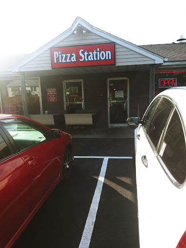

| Fast Food |
Addresses |
Burger King
|
314 Route 94, Vernon Township, NJ 07462 |
(973)764-8898 |
|
Burger King is a global fast-food restaurant chain recognized for its flame-grilled burgers, signature Whopper sandwich, and a wide selection of fast-food menu items. |
Taco Bell
|
297 NJ-94, Vernon Township, NJ 07462 |
(973)721-6292 |
 |
Taco Bell is a prominent fast-food chain renowned for its Mexican-inspired menu, including tacos, burritos, and other Tex-Mex cuisine, served in various locations worldwide. |
Paesano Pizzeria
|
316 NJ-94, Vernon Township, NJ 07462 |
(973)764-8100 |
| Paesano Pizzeria is a popular pizzeria known for serving delicious pizzas, Italian dishes, and other classic Italian-American fare in its local community. |
Pizza Station
|
297 NJ-94, Vernon Township, NJ 07462 |
(973)764-8100 |
 |
Pizza Station is a popular pizzeria offering a wide range of pizza varieties and Italian dishes, often enjoyed for its convenient takeout and delivery options. |
| Foreign |
Addresses |
China Star
|
287 NJ-94 Suite #7, Vernon Township, NJ 07462 |
(973)209-7827 |
|
China Star is a Chinese restaurant that serves a variety of Chinese dishes, known for its distinctive flavors and menu items such as Peking duck, sweet and sour chicken, and dim sum. |
Sushi Ya 2
|
530 Co Rd 515 #4, Vernon Township, NJ 07462 |
(973)764-0636 |
|
Sushi Ya 2 is a sushi restaurant known for its fresh and skillfully prepared sushi and Japanese cuisine. |
Wings Asian Bistro
|
281 NJ-94, Vernon Township, NJ 07462 |
(973)827-6688 |
|
Wings Asian Bistro is a dining establishment known for its Asian-inspired cuisine, including dishes like sushi, noodles, and various regional specialties. |
| Restaurants |
Addresses |
|
The Glenwood
|
2 Vernon Crossing Rd, Vernon Township, NJ 07462 |
(973)764-2600 |
|
The Glenwood, formerly known as Smokey's Tavern, offers a range of food and drinks in a welcoming atmosphere, often hosting live music and events for the local community. |
Tomato Garden Pizza and Restaurant
|
530 Co Rd 515, Vernon Township, NJ 07462 | (973)764-4162 |
|
Tomato Garden Pizza and Restaurant is a popular dining establishment known for its pizza, Italian dishes, and a variety of other menu options, providing a casual and tasty dining experience for the local community and visitors. |
Hef's Hut Bar and Grill
|
414 County Rd 517, Vernon Township, NJ 07462 | (973)721-7115 |
| Hef's Hut Bar and Grill is a local bar and restaurant, typically offering a menu of pub-style food, drinks, and a casual dining atmosphere for patrons to enjoy. The exact details and offerings may vary depending on the specific location and ownership. |